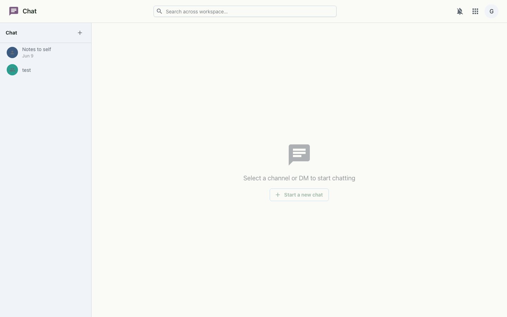
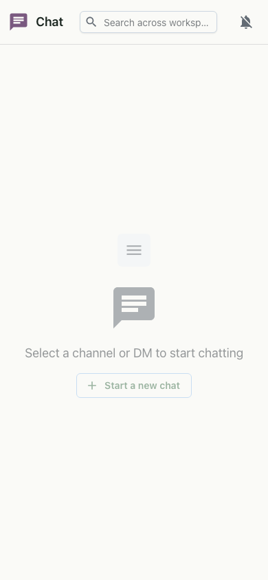

Real-time team chat — channels and direct messages that update live, without handing your conversations to a third party.
Chat gives your workspace a fast place to talk. Group channels keep teams in sync; direct messages cover quick one-on-ones. Messages stream over a live connection, so replies, reactions and presence appear the moment they happen. The same chat is also embedded as a compact rail inside Mail.


Chat keeps a websocket open per channel for live message, presence and deletion events. Attachments upload to your workspace's object storage and are referenced inline. The member directory and @mention autocomplete are served from the shared org directory, and every request rides your workspace single sign-on.